AI Toolhouse
User Guide
Table of Contents
Installation & First Launch
- Download the latest installer (
AI-Toolhouse-Setup-x.x.x.exe) from the shared release location. - Run the installer and follow the on-screen steps. No admin rights required.
- A desktop shortcut and Start Menu entry are created automatically.
- On first launch, a Settings window appears asking for the backend URL. Enter the address your IT contact provided and click Save.
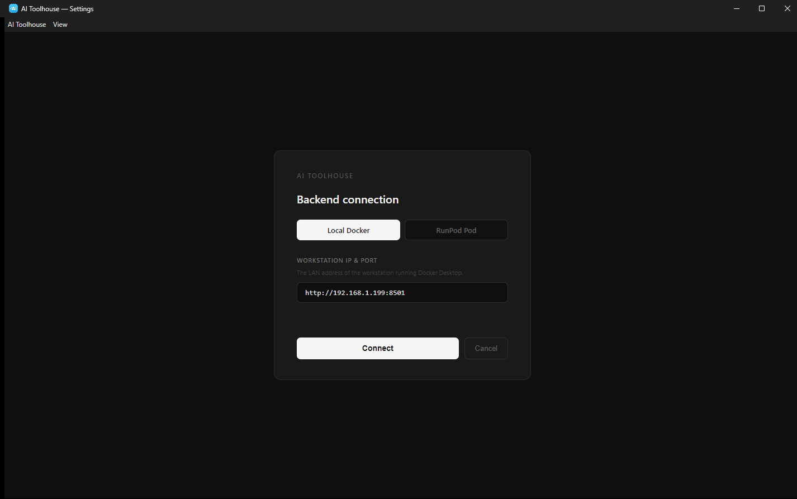
You only need to do this once. The app remembers your setting between sessions.
Logging In
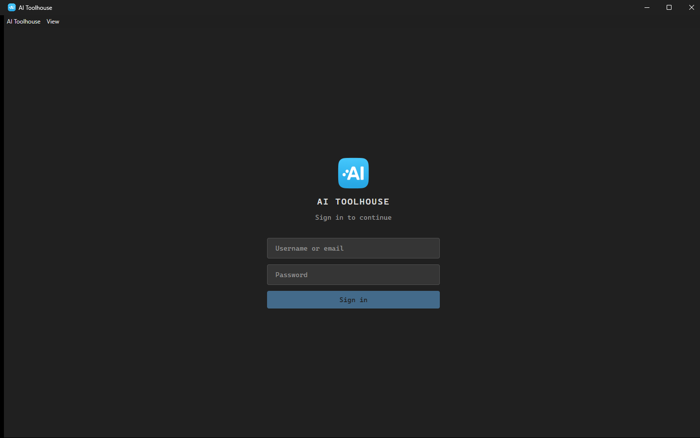
Enter your username and password and click Log in. Your session stays active until you log out manually — you will not be asked to log in again each time you open the app.
To log out, click your username in the top-right corner and select Log out.
The Home Screen
After logging in you land on the Home screen, which shows all the tools available to your account as tiles.
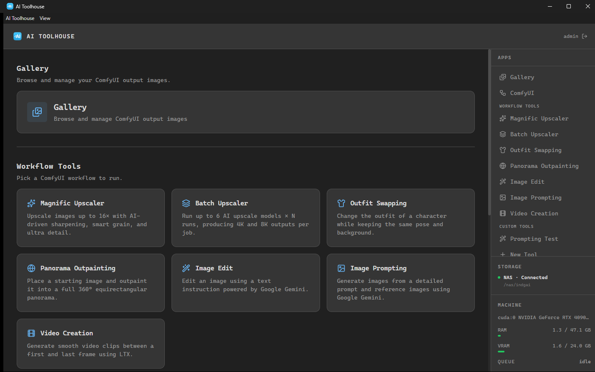
- Tools you do not have access to will not appear.
- Click any tile to open that tool.
- Click the AI Toolhouse logo in the top-left at any time to return here.
The Sidebar
While inside a tool, a sidebar is visible on the right side of the screen.
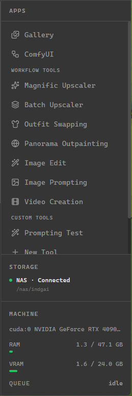
| Section | What it shows |
|---|---|
| Apps | Quick links to all your tools — click any to switch directly |
| Storage | Whether the NAS storage is reachable (green dot = connected) |
| Machine | Live GPU, RAM, and VRAM usage of the server |
| Queue | Whether the AI server is currently busy or idle |
Output Paths (Client / Project / Filename)
Most tools have an Output Path section at the bottom of the left panel.
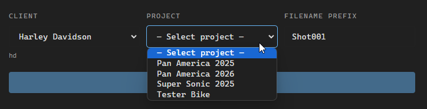
| Field | Purpose |
|---|---|
| Client | The client folder your output is saved under |
| Project | Sub-folder within that client |
| Filename prefix | Optional text prepended to every output filename |
These fields are optional. If left empty, files are saved to a default location. Filling them in keeps the Gallery organised and makes it easier to find your work later.
Magnific Upscaler
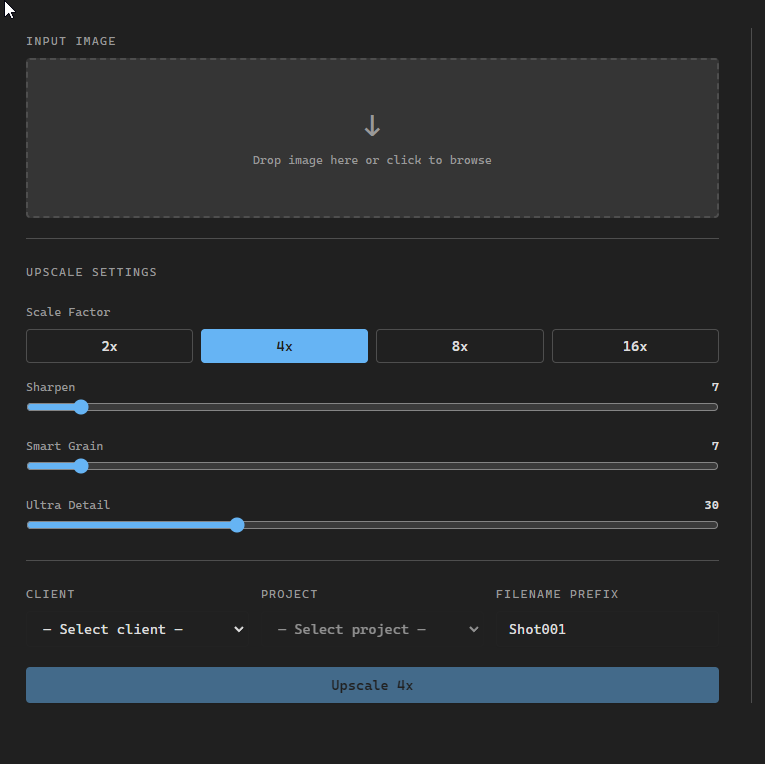
Steps
- Drag your image onto the upload area, or click it to browse for a file.
- Choose your Scale — 2×, 4×, 8×, or 16×.
- Adjust the three quality sliders:
- --Sharpen — increases edge crispness (0–100)
- --Smart Grain — adds subtle film grain to hide AI artefacts (0–100)
- --Ultra Detail — pushes fine detail recovery (0–100)
- Fill in the Output Path if needed.
- Click Upscale
The result appears on the right side. Click Download to save it.
Batch Upscaler
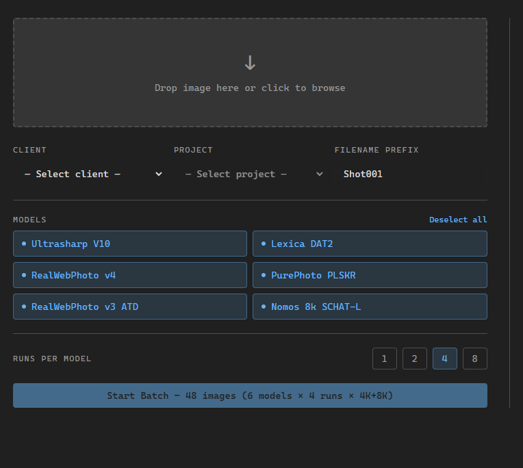
Steps
- Upload your image.
- Tick the models you want to compare (multiple allowed).
- Set Runs per model — more runs = more variation to choose from.
- Note the button label — it shows exactly how many images will be generated, e.g. "Start Batch — 48 images (6 models × 4 runs × 4K+8K)".
- Click Start Batch.
Progress is shown per model with coloured status dots:
When all runs are complete, click Download ZIP to get all results at once.
Outfit Swapping
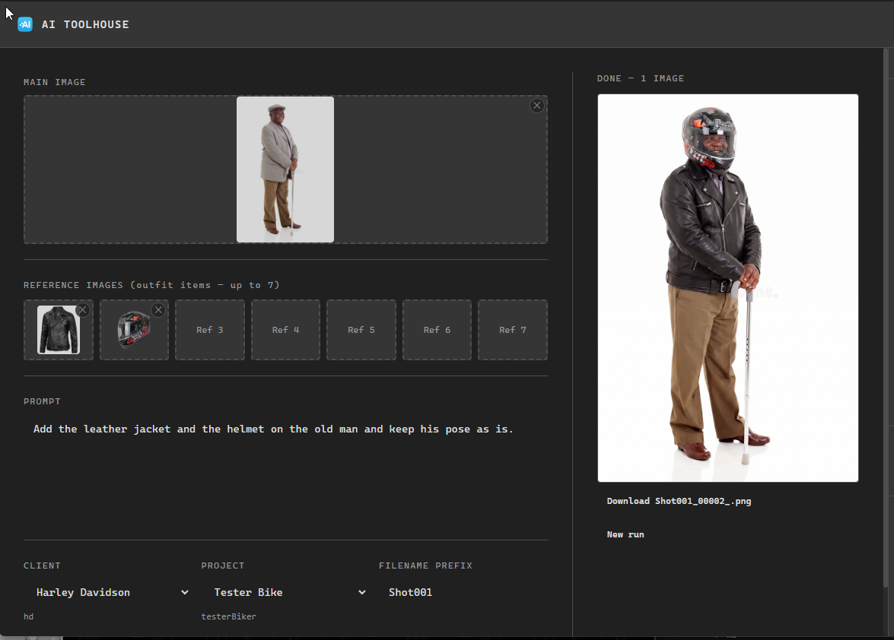
Steps
- Upload your main image — the person or subject who will wear the outfit.
- Upload up to 7 reference images — garments, accessories, or style references.
- Edit the prompt to describe the desired result. A starting template is pre-filled.
- Set the Output Path if needed.
- Click Generate.
The result appears on the right when complete.
Image Edit
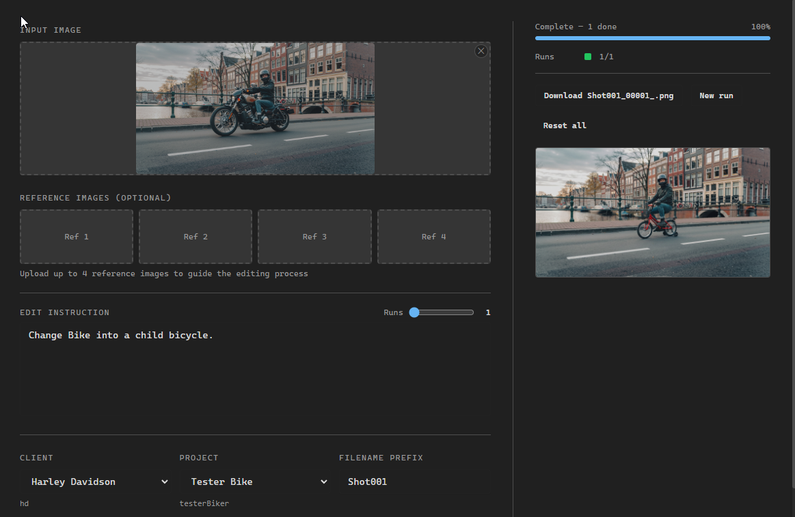
Steps
- Upload the image you want to edit.
- Optionally upload up to 4 reference images to guide the style or look.
- Type your Edit Instruction, e.g. "change the bike colour to bright yellow" or "replace the background with a forest".
- Use the Runs slider to generate multiple variations in one go (1–10).
- Set the Output Path if needed.
- Click Generate.
Results appear below the progress bar. Use Download ZIP to get all versions.
Image Prompting
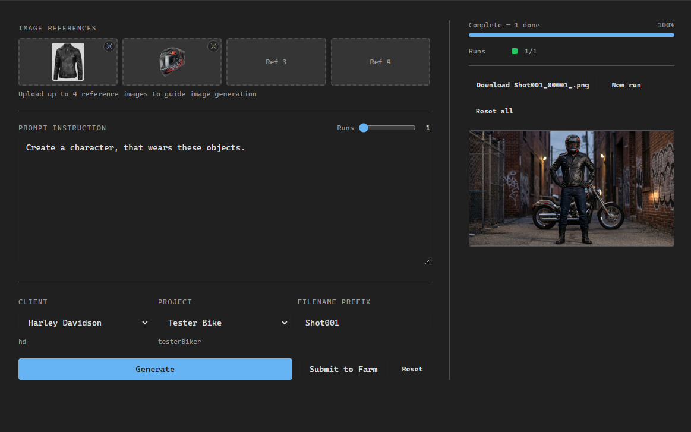
Steps
- Optionally upload up to 4 reference images to guide the output.
- Write your prompt — describe what you want to create in as much detail as possible.
- Set the number of Runs (1–10) to generate variations.
- Set the Output Path if needed.
- Click Generate.
Each run is tracked with its own status indicator. Click individual images to download, or use Download ZIP for all.
Video Creation
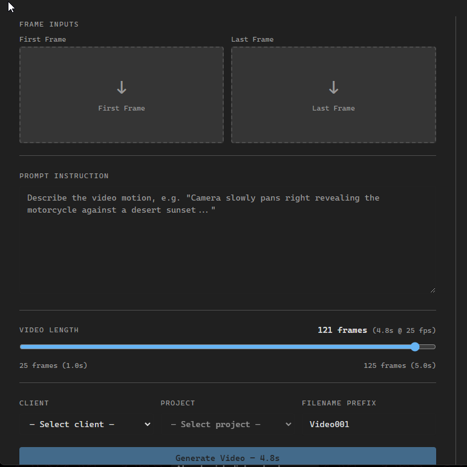
Steps
- Upload the First Frame — where the video begins.
- Upload the Last Frame — where the video ends.
- Write a prompt describing the motion, e.g. "Camera slowly pans right across a sun-lit studio".
- Set the Length using the slider (25–125 frames — the label shows the duration in seconds at 25 fps).
- Set the Output Path if needed.
- Click Generate.
The finished video plays directly in the app when complete. Click Download to save it.
Panorama Outpainting
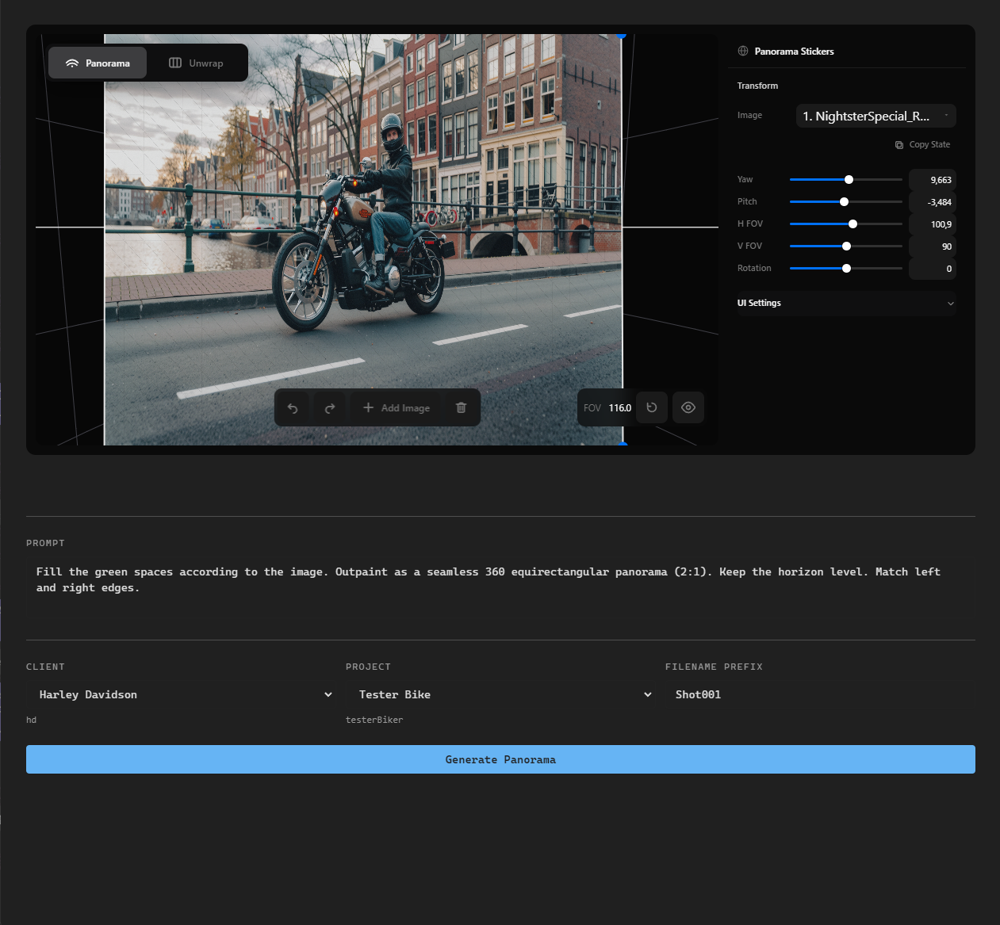
Steps
- Upload your base image — the section of the panorama you already have.
- Use the canvas editor to place stickers on the areas you want filled in.
- Adjust the prompt to describe the style and content of the filled areas.
- Set the Output Path if needed.
- Click Generate (greyed out until at least one sticker is placed).
The completed 360° panorama replaces the canvas preview when done.
Custom Tools
Custom Tools are built by your admin directly from ComfyUI workflows. They appear alongside the standard tools in the sidebar and home screen — fill in the fields and click Run.
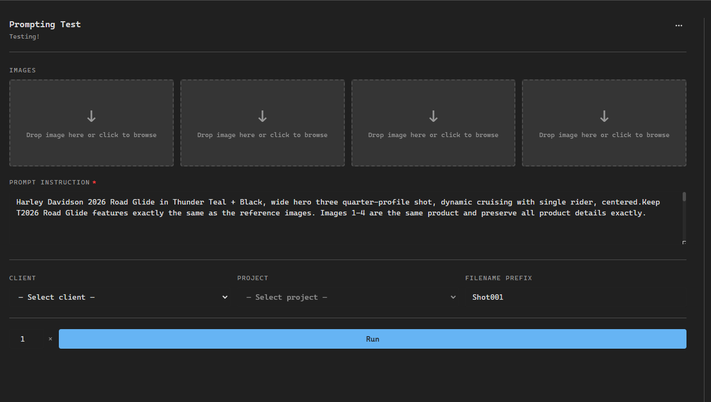
Each custom tool is different. Ask your admin what a specific tool does.
Batch Mode
Most custom tools support batch runs. Set the Batch count (1–50) and click Start Batch. Results appear one by one as each run completes, and you can download all as a ZIP when done.
13a. Building a Custom Tool
Admins can create new custom tools from any ComfyUI workflow using the Workflow Builder wizard. Click + New Tool at the bottom of the sidebar to start.
Before you begin — two requirements
1. Export the workflow in API format
The Workflow Builder needs the workflow's API JSON, not the regular save file. In ComfyUI:
- Open Settings (gear icon, top-right)
- Enable Dev Mode
- Close Settings — the top bar now shows a Save (API Format) button
- Click it to download the
.jsonfile
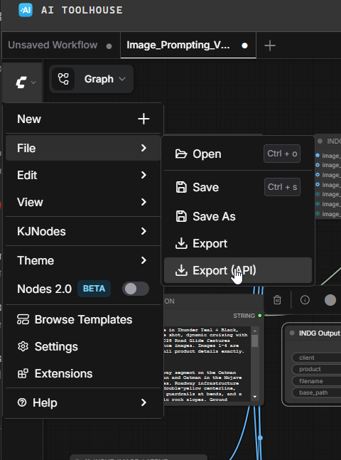
2. Use INDG custom nodes for output saving
For a custom tool to save results to studio storage, the workflow must contain an INDGOutputPath node. If the workflow uses a standard ComfyUI Save Image node, results will save to ComfyUI's default output folder and the output path picker will not appear. Ask your pipeline TD to add an INDGOutputPath node if it is missing.
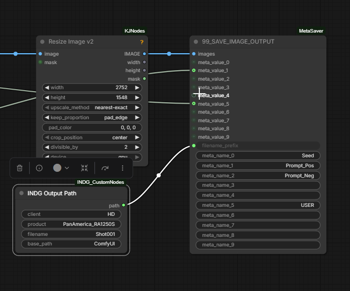
Step 1 — Upload the workflow
Drop your API-format .json onto the upload zone (or click to browse). The app scans the workflow and shows an inspection table listing every configurable input found.
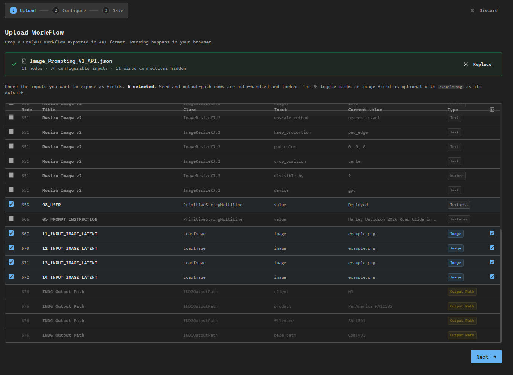
| Column | Meaning |
|---|---|
| Node | The ComfyUI node ID |
| Title | The node's title as set in ComfyUI |
| Type | What kind of field was detected (see below) |
Detected types explained:
| Badge | Meaning |
|---|---|
Image | An image upload slot |
Text | A short text input |
Textarea | A longer text/prompt field |
Number | A numeric value |
Slider | A value with a min/max range |
Select | A dropdown with fixed options |
Toggle | An on/off switch |
Auto · seed | Random seed — handled automatically, no user input needed |
Auto · user | Username — injected automatically at run time |
Output Path | The INDGOutputPath node — handled automatically |
Tick the inputs you want to expose as fields in the finished tool. Auto and Output Path rows are locked. For image inputs, you can mark a field as optional (it will use a built-in placeholder if left empty). Click Next when you have selected at least one field.
Step 2 — Configure fields
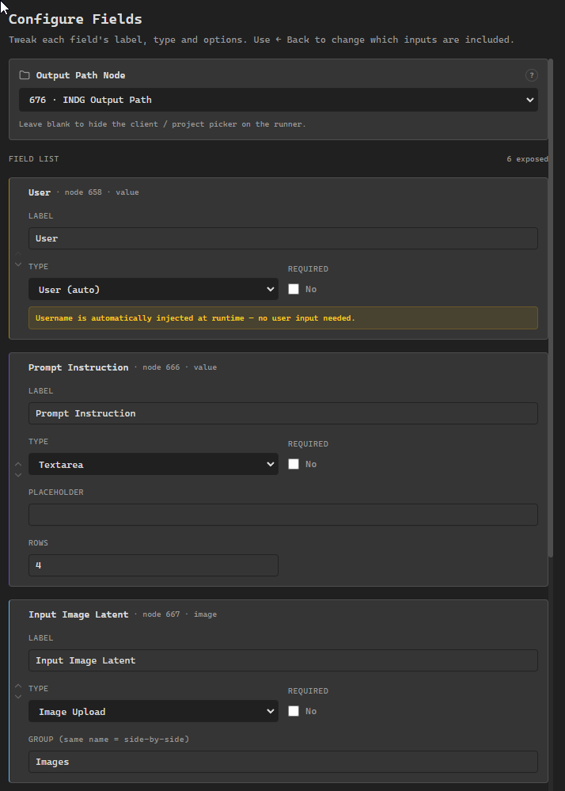
Each selected input becomes a field card. For every card you can set:
| Setting | Description |
|---|---|
| Label | The name shown to the user (e.g. "Reference Image", "Prompt") |
| Type | Override the auto-detected type if needed |
| Required | Whether the user must fill this field before running |
| Placeholder | Hint text for text / textarea fields |
| Group | Image fields with the same group name appear side by side |
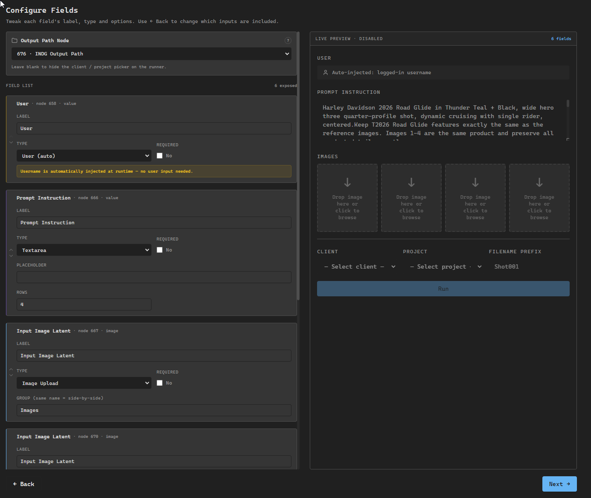
Use the ↑ ↓ arrows on each card to reorder fields. The live preview on the right updates as you make changes. Click Next when done.
Step 3 — Name and save
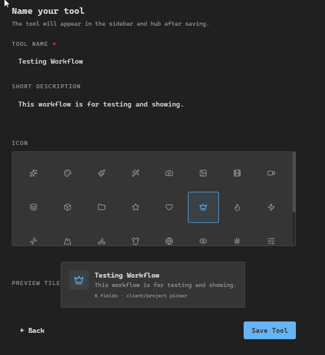
| Field | Description |
|---|---|
| Tool name (required) | Shown on the hub tile and in the sidebar |
| Short description | One-line summary shown under the name on the tile |
| Icon | Pick an icon from the grid — shown on the tile and in the sidebar |
The preview tile shows exactly how the tool will look on the home screen. Click Save Tool. The tool is immediately available to all assigned users.
Gallery
The Gallery lets you browse, preview, and manage all AI-generated images saved on the server.
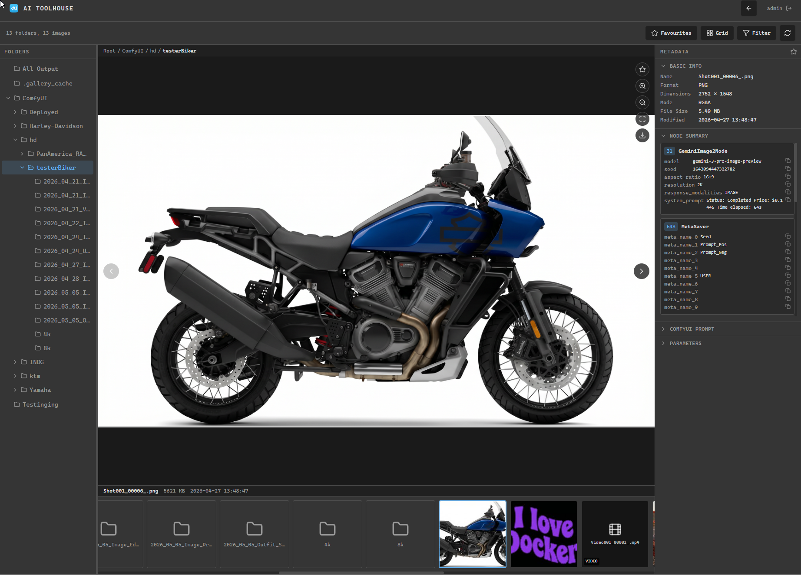
Navigating Folders
The left panel shows a folder tree. Click any folder to browse its contents. The tree refreshes automatically every 10 seconds — new outputs appear without needing to reload.
Two View Modes
Switch using the view toggle buttons in the top-right of the gallery.
Detail View (default)
- Large preview of the selected image
- Right panel shows: filename, format, dimensions, and creation metadata
- Use the left / right arrow keys to step through images quickly
Grid View
- Thumbnail overview of all images in the current folder
- Tick checkboxes on images to select multiple at once
- Bulk actions appear at the top when images are selected
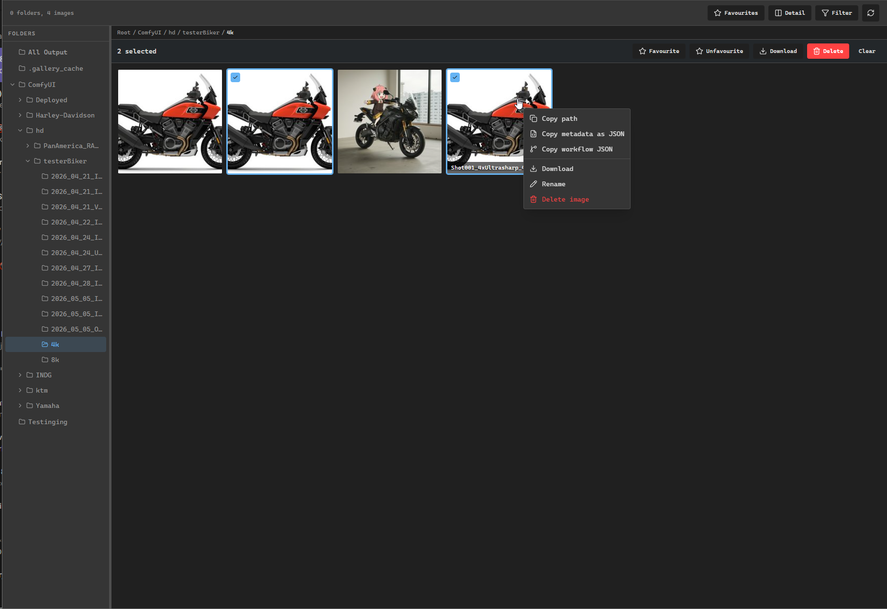
Favourites
The Favourites button (star icon, top-right) is a toggle. When active, the folder tree is replaced by a flat list of every image you have starred — across all folders and projects at once.
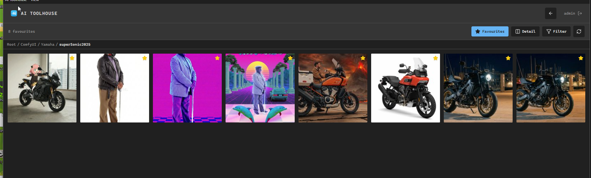
Starring a single image — Detail View
With an image selected in Detail View, click the star icon in the metadata panel. Click it again to unstar.
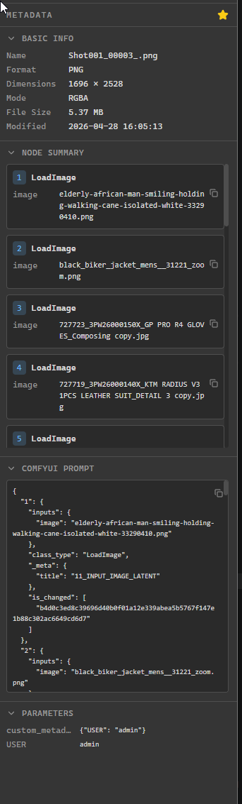
Starring multiple images — Grid View
- Switch to Grid View
- Tick the checkboxes on the images you want to act on
- Click Star selected or Unstar selected in the bulk action bar
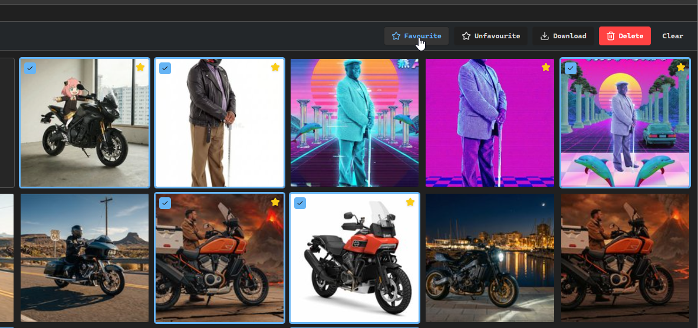
Managing Images
| Action | How |
|---|---|
| Favourite | Star icon in Detail View, or bulk star in Grid View |
| Rename | ⋯ menu → Rename, or right-click the image |
| Move | Drag the image to another folder in the tree |
| Download | Download icon in the Detail View metadata panel |
| Delete | ⋯ menu for single image, or bulk delete in Grid View |
Updates
AI Toolhouse updates itself automatically. When a new version is ready, a small dialog appears:
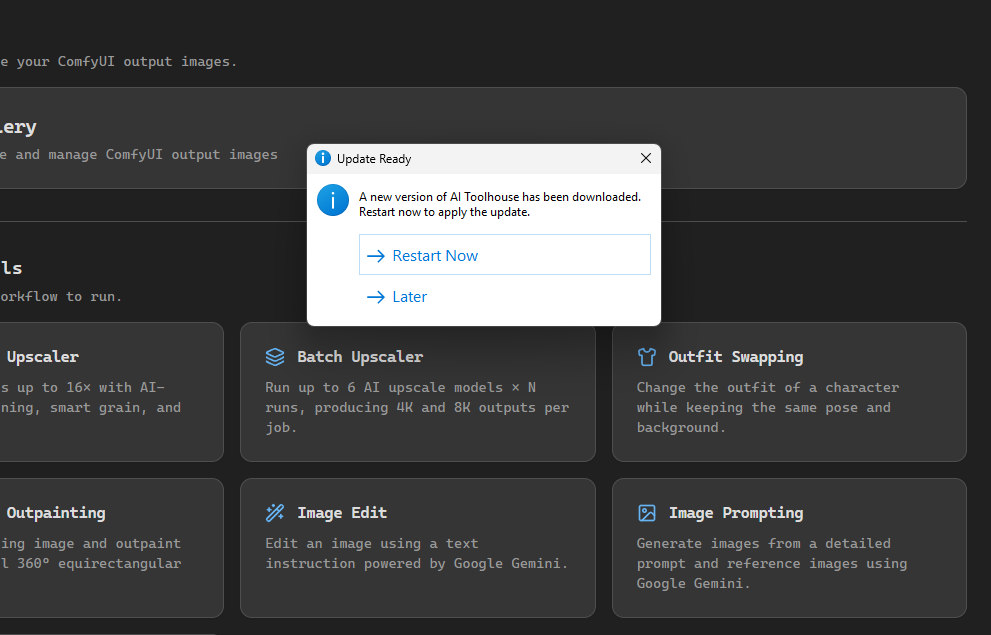
- Restart Now — closes the app and installs the update immediately. The app reopens on its own.
- Later — dismisses the dialog. The update will be installed the next time you restart the app normally.
You do not need to download or run any installer manually for updates after the initial installation.